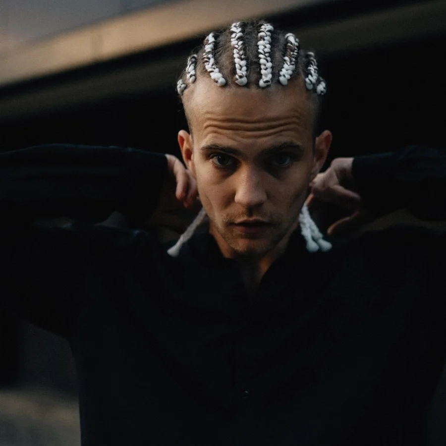

Events. Advertising. BTS.
Photographer based in Kyiv. Club nights, festivals, brand campaigns and reportage.


About

I photograph the people and the energy of a night out, and the brands that want to feel like it.
Ilya Kolotiy is a photographer based in Kyiv. He works in advertising, events, behind the scenes and reportage, from club floors and open-air festivals to commercial shoots for sportswear and drinks brands.
Selected projects
- Puma Ukraine
- Adidas Ukraine
- Pepsi
- Twix Ukraine
- Lipton Ice Tea
- The Hardkiss
- GUD Bags
- Galaxy Park